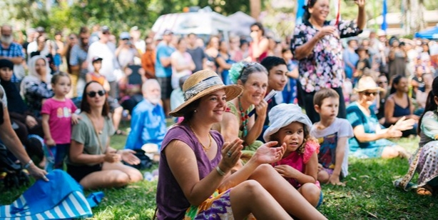
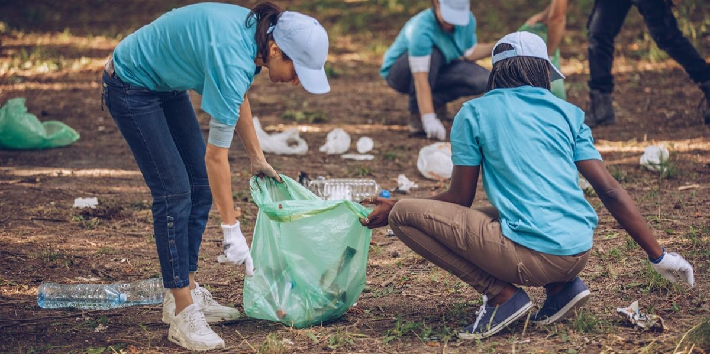

Be the Change.
Who We Are
Texas Conservation is a non-profit organization built on the need for plant and wildlife conservation.
Together, our team hits the ground to clean up parks, organize fund-raisers, maintain trails, and inform the public on Leave No Trace principles.
Learn more about Leave No Trace principles here.
What We Do
Community Events
No matter your interest, there is an event for you. Races, pot lucks, food drives, speaker series, plays, theme parks, and more.
Park Maintenance

Love to get your hands dirty? We maintain over 50 local hike and bike trails, parks, and community centers. Whether you want to plant a tree
or dig up invasive species, there is a job for you.Fundraising
Get involved in a number of fundraising events that keeps our organization running smoothly.
Clean Up
Litter can be harmful to our local plants and animals. Our volunteers help ensure our parks, lakes, and neighborhoods stay litter-free.
Miscellaneous
Have an idea of your own? We are always looking to contribute to the community and welcome all suggestions!